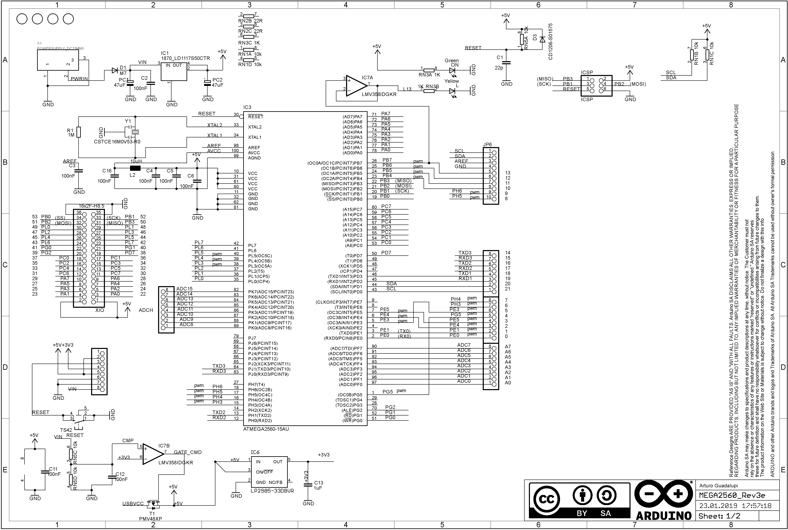

Содержание
Arduino Mega 2560: расиновка,
схема подключения и
программирование
Arduino Mega 2560 — флагманская платформа для разработки на базе микроконтроллера ATmega2560.
На плате предусмотрено всё необходимое для удобной работы с микроконтроллером: 54 цифровых входа/выхода, 16 аналоговых входов, разъём для программирования USB, внешний разъём питания и кнопка сброса.
Подключение и настройка
Для запуска платформы скачайте и установите на компьютер интегрированную среду разработки Arduino IDE.
При выборе платформы выбирайте Arduino Mega 2560.
Если всё получилось — можете смело переходить к экспериментам.
Элементы платы
Микроконтроллер ATmega2560
Сердцем платформы Arduino Mega является 8-битный микроконтроллер семейства AVR — ATmega2560 с тактовой частотой 16 МГц. Контроллер предоставляет 256 КБ Flash-памяти для хранения прошивки, 8 КБ оперативной памяти SRAM и 4 КБ энергонезависимой памяти EEPROM для хранения данных.
Микроконтроллер ATmega16U2
Микроконтроллер ATmega16U2 обеспечивает связь микроконтроллера ATmega2560 с USB-портом компьютера. При подключении к ПК Arduino Mega 2560 определяется как виртуальный COM-порт.
Светодиодная индикация
|
Имя светодиода |
Назначение |
|
RX и TX |
Мигают при обмене данными между Arduino Mega 2560 и ПК. |
|
L |
Пользовательский светодиод подключённый к 13 пину микроконтроллера. При высоком уровне светодиод включается, при низком – выключается. |
|
ON |
Наличие питания на Arduino Mega. |
Разъём USB
Разъём USB Type-B для питания и прошивки платформы Arduino Mega 2560 с помощью компьютера.
Разъём внешнего питания
Разъём для подключения внешнего питания от 7 В до 12 В.
Кнопка сброса
Аналог кнопки RESET обычного компьютера. Служит для сброса микроконтроллера.
Регулятор напряжения 5 В
Линейный понижающий регулятор напряжения LD1117S50CTR с выходом 5 вольт обеспечивает питание микроконтроллеров ATmega2560, ATmega16U2 и другой логики платформы. Максимальный выходной ток составляет 800 мА.
Регулятор напряжения 3,3 В
Линейный понижающий регулятор напряжения LP2985-33DBVR с выходом 3,3 вольта. Линия выведена только на пин 3V3. Максимальный выходной ток составляет 150 мА.
Разъём ICSP
ICSP-разъём предназначен для внутрисхемного программирования микроконтроллера ATmega2560. Также с применением библиотеки SPI данные выводы могут осуществлять связь с платами расширения по интерфейсу SPI. Линии SPI выведены на 6-контактный разъём, а также продублированы на цифровых пинах 50(MISO), 51(MOSI), 52(SCK) и 53(SS).
Разъём ICSP1
ICSP-разъём для внутрисхемного программирования микроконтроллера ATmega16U2.
Распиновка

Пины питания
- VIN: Входной пин для подключения внешнего источника питания с напряжением в диапазоне от 7 до 12 вольт. Через контакт можно потреблять напряжение, когда устройство запитано через внешний разъём питания.
- 5V: Выходной пин от регулятора напряжения на плате с выходом 5 вольт и максимальн-ых током 800 мА. Питать устройство через вывод 5V не рекомендуется — вы рискуете спалить плату.
- 3.3V: Выходной пин от регулятора напряжения с выходом 3,3 вольта и максимальных током 150 мА. Питать устройство через вывод 3V3 не рекомендуется — вы рискуете спалить плату.
- GND: Выводы земли.
- IOREF: Контакт предоставляет платам расширения информацию о рабочем напряжении микроконтроллера. В зависимости от напряжения, плата расширения может переключиться на соответствующий источник питания либо задействовать преобразователи уровней.
- AREF: Пин для подключения внешнего опорного напряжения АЦП относительно которого происходят аналоговые измерения при использовании функции analogReference() с параметром «EXTERNAL».
Порты ввода/вывода
- Цифровые входы/выходы: пины 0–53
Логический уровень единицы — 5 В, нуля — 0 В. Максимальный ток выхода — 40 мА. К контактам подключены подтягивающие резисторы, которые по умолчанию выключены, но могут быть включены программно.
- ШИМ: пины 2–13 и 44–46
Позволяет выводить аналоговые значения в виде ШИМ-сигнала. Разрядность ШИМ не меняется и установлена в 8 бит.
- АЦП: пины A0–A16
Позволяет представить аналоговое напряжение в цифровом виде. Разрядность АЦП не меняется и установлена в 10 бит. Диапазон входного напряжения от 0 до 5 В. При подаче большего напряжения — вы убьёте микроконтроллер.
- TWI/I²C: пины 20(SDA) и 21(SCL)
Для общения с периферией по интерфейсу I²C. Для работы используйте библиотеку Wire.
- SPI: пины 50(MISO), 51(MOSI), 52(SCK) и 53(SS)
Для общения с периферией по интерфейсу SPI. Для работы — используйте библиотеку SPI.
- UART: пины 0(RX) и 1(TX), 19(RX1) и 18(TX1), 17(RX2) и 16(TX2), 15(RX3) и 14(TX3)
Используется для коммуникации платы Arduino с компьютером или другими устройствами по последовательному интерфейсу. Выводы 0(RX) и 1(TX) соединены с соответствующими выводами микроконтроллера ATmega16U2, выполняющего роль USB-UART преобразователя. Для работы с последовательным интерфейсом — используйте методы библиотеки Serial.
Принципиальная и монтажная схемы

Характеристики
- Микроконтроллер: ATmega2560
- Ядро: 8-битный AVR
- Тактовая частота: 16 МГц
- Объём Flash-памяти: 256 КБ (8 КБ занимает загрузчик)
- Объём SRAM-памяти: 8 КБ
- Объём EEPROM-памяти: 4 КБ
- Портов ввода-вывода всего: 54
- Портов с АЦП: 16
- Разрядность АЦП: 10 бит
- Портов с ШИМ: 15
- Разрядность ШИМ: 8 бит
- Аппаратных интерфейсов SPI: 1
- Аппаратных интерфейсов I²C / TWI: 1
- Аппаратных интерфейсов UART / Serial: 4
- Номинальное рабочее напряжение: 5 В
- Максимальный выходной ток пина 5V: 800 мA
- Максимальный выходной ток пина 3V3: 150 мA
- Максимальный ток с пина или на пин: 40 мА
- Допустимое входное напряжение от внешнего источника: 7–12 В
- Габариты: 101×53 мм
Ресурсы
{kind=link}